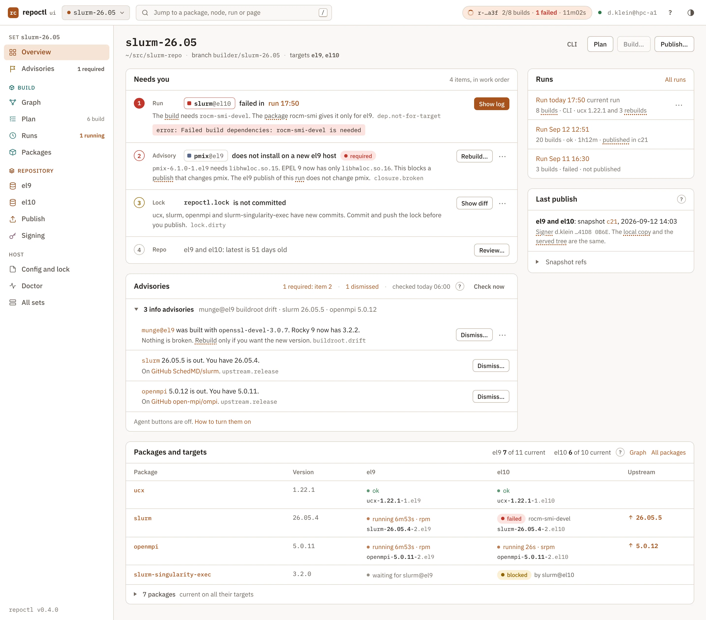

This chapter specifies how an LLM agent works with repoctl. It gives the generic skills, the tools of each task and the MCP server with its tool table. It also gives the agent that the web UI starts for an advisory button. The deterministic core does the work. The agent explains and proposes. A human takes every step that changes shared state.
repoctl, package-updates, bump-package, triage-build and rebuild-check. Package facts live in repoctl.yaml, not in a skill.allowed-tools only grants, so each install path for Claude Code also adds a deny list and the guard hook.repoctl mcp start serves 28 tools for one set. --tools read limits the server to the 23 read tools. No tool changes shared state.--json. It gives the human a verdict, a diff or a command. Only the human runs a shared-state command.Why the skill logic ships with repoctl and the facts ship with the set:
| Question | Ships with repoctl | Ships with the set config |
|---|---|---|
A skill calls repoctl … --json. Who keeps skill and CLI in step? | Same commit, same version. No drift. | Each set must update its skills when the CLI changes. Drift is likely. |
| A fix to a skill | One release reaches all sets. | The fix must go to each builder branch (problem P6, decision.html#problems). |
| Package facts (upstream repo, tag filter, notes) | Wrong place. The skill would know about slurm. | Right place. In repoctl.yaml the deterministic CLI can use them too. |
| Local rules (who publishes, rollout order) | Wrong place. | Right place, as an optional set-local skill. |
| Work without an agent | The facts in repoctl.yaml work without an agent. repoctl upstream gives the same table as the skill, without the release-note summary. | |
The generic skills reach an agent in four ways:
main holds the skills, declares the MCP server (start and registration) and registers the guard hook.repoctl skills install writes plain SKILL.md files for any agent. --user (the default) writes ~/.claude/skills/<name>/ and merges the deny list and the guard hook into ~/.claude/settings.json. --project writes <set>/.claude/skills/<name>/, adds the paths to .git/info/exclude and merges the deny list and the guard hook into <set>/.claude/settings.json. The command replaces copies that repoctl installed and refuses a file that a human changed./usr/share/repoctl/skills/ (repoctl skills path).repoctl://skills/{name} serves them to a client without skill support.The skills: key of repoctl.yaml names the set-local skill directories, for example .claude/skills (config.html#set-config). A set-local skill can add a skill, but it can never replace a generic skill with the same name. repoctl skills ls shows the source, version and install place of each skill and marks a name conflict (cli.html#cmd-skills). repoctl doctor warns about a conflict and about an installed skill with another version than the binary.
The CLAUDE.md of a builder branch holds notes about the set. It points to the repoctl skill and to the help topics new-set and packages. It holds no generic workflow.
These rules apply to each generic skill:
repoctl/v1alpha1 output. It stops when apiVersion has another value (contract.html#versioning).humanAction (needs human). It never tries another way to the same step.| Skill | Purpose | Input | Result | Stops at |
|---|---|---|---|---|
repoctl | How to use the CLI, the config schema and the safety rules. The base skill for a terminal session. | a question or a task in the set | Answers from Status, Plan, Run, AdvisoryList, SnapshotList, the problem codes and repoctl://schema/config. It can start a build into staging. | every humanAction and every publish. It never calls mock, rpmsign or createrepo_c and never pushes. |
package-updates | Which packages have a new upstream version, and what changed. | optional dirs; in the UI one dir and its upstream version | A table (Package, Current, Upstream, Released, Fedora, Status), then a summary of the release notes from the current to the latest version of each package. It reads Upstream (status incl. frozen, latest, newer, releaseNotesUrl, fedora) and Package.notes. | the report. It writes nothing else. |
bump-package draft | Propose a version bump of one package. | DIR [VERSION] --draft | A unified diff of the spec change, the changelog text and the commands that apply it. | the report. It does not edit, commit, pin or build. |
bump-package apply | Bump one package in the terminal, step by step. | DIR [VERSION] | It edits the spec, commits in packages/<dir>, pins and builds into staging. Then it shows the repo diff (Run: state, publishable, next; RepoDiff). | push (humanAction push), the commit of repoctl.lock and publish. On a failed node it hands over to triage-build. When an advisory says that a dependent needs a rebuild, it asks first, then runs repoctl rebuild. |
triage-build | Find the cause of a failed node and propose a fix. | [RUN | RUN/NODE] | A report: cause, evidence (log lines with line numbers), the fix as a diff and the command that applies it. It reads NodeResult.error (class, excerpt, missing), NodeLog, Graph.unresolved, Package.targets and the spec file. | the report. It edits nothing. For class host it says that a retry can help after the host fix. |
rebuild-check | Answer "is a rebuild necessary?" for one advisory. | ADVISORY-ID | Yes, no or unknown for each dependent, with evidence. If yes, the command repoctl rebuild DIR --reason "…". It reads Advisory (facts, closure), Plan, Graph and RepoDiff. | the answer. It edits nothing and never runs the command. |
Mode draft reads and plans only. The UI button "Draft version bump" uses it, and so does /bump-package DIR VERSION --draft in a terminal. Mode apply runs in a terminal only, for example /bump-package ucx 1.22.1. The human sees every step there and gives each OK in the terminal. The skill edits ucx.spec, commits "Bump to 1.22.1" on ucx/slurm-26.05 and pins the commit. The push of the package branch and the commit of repoctl.lock stay steps for the human.
| error.class | What the skill looks at |
|---|---|
builddep | missing against Graph.unresolved and Package.targets |
srpm | error.code (source.*), the sources file and the Source URLs, spec syntax, rpmautospec history |
build | The first compiler or test error in build.log |
mock | repoctl doctor |
host | repoctl doctor and the free disk, then a new build |
stage | createrepo_c and the RPM files of the node |
timeout | The step and the limit in the message, the last lines of the node log, then build.timeout.* of the user config |
For slurm@el10 in run r-20261102-1750-a3f the skill reports: "slurm.spec requires rocm-smi-devel without a condition. rocm-smi has targets: [el9]. Fix A: put the BuildRequires and the --with-rsmi configure flag under %if 0%{?rhel} < 10. Fix B: build rocm-smi for el10 too."
Each skill is one SKILL.md with a YAML frontmatter: name, description and allowed-tools. The list names the Bash prefixes for the CLI and the MCP tools. Example of triage-build:
---
name: triage-build
description: Find the cause of a failed node in a repoctl run and propose a fix. Use after a build
failed. Arguments: [run | run/node]. Reads logs, the graph and spec files; edits nothing.
allowed-tools:
- "Read"
- "Grep"
- "Bash(repoctl runs:*)"
- "Bash(repoctl logs:*)"
- "Bash(repoctl graph:*)"
- "Bash(repoctl show:*)"
- "Bash(repoctl doctor:*)"
- "mcp__repoctl__repoctl_runs"
- "mcp__repoctl__repoctl_run_get"
- "mcp__repoctl__repoctl_logs"
- "mcp__repoctl__repoctl_graph"
- "mcp__repoctl__repoctl_show"
- "mcp__repoctl__repoctl_doctor"
---The frontmatter of bump-package grants the tools of mode apply. Mode draft has no frontmatter of its own. When the input has --draft, the skill text tells the agent to use only the tools of the draft list. In the web UI, repoctl enforces the draft list with --allowedTools and the read-only MCP server. The frontmatter of the repoctl skill grants the read commands of the CLI, repoctl build, the 23 read tools and repoctl_build. The full lists are in the next section.
Each task has its own tool list. A terminal session runs with the permissions of the human, and the list of the skill grants its tools. A task of the web UI gets the list of its row and nothing else. Its MCP server runs with --tools read. repoctl passes the list with --allowedTools and denies Bash, Edit, Write and NotebookEdit. Thus the UI agent has no way around the MCP server.
| Task | Skill and mode | MCP tools | Other tools |
|---|---|---|---|
| terminal | repoctl | the 23 read tools, repoctl_build | Bash: the read commands and repoctl build |
| terminal | package-updates | upstream, show | WebFetch, WebSearch, Agent |
| UI: Summarize upstream release | package-updates | upstream, show | WebFetch |
| terminal | bump-package apply | status, show, upstream, pin, rebuild, plan, build, run_wait, repo_diff, advisory | Read, Edit of packages/**, WebFetch, Skill, git -C packages/ (the guard hook allows only add and commit in a package worktree) |
UI: Draft version bump; terminal --draft | bump-package draft | status, show, upstream, plan, advisory | Read, WebFetch |
| UI: Explain failure; terminal | triage-build | runs, run_get, logs, graph, show, doctor | Read, Grep |
| UI: Is a rebuild necessary?; terminal | rebuild-check | advisory, advisories, plan, graph, show, repo_diff | Read, Grep |
The table drops the prefix repoctl_ of the MCP tool names. A UI task never gets repoctl_build, repoctl_rebuild, Edit or Bash.
allowed-tools only grants. It cannot forbid. For this reason each install path for Claude Code adds two guards: a static deny list in the Claude Code settings and the guard hook. They cover every command of the safety class shared state, the trust commands, the tools that repoctl calls for the human, the git commands that only a human runs, and the set inputs (security.html#set-inputs).
| Install path | Skills | Guard hook and static deny list |
|---|---|---|
Claude Code plugin (branch main) | in the plugin | hooks/hooks.json of the plugin registers the guard hook. The guard also applies the static deny list, so the plugin needs no settings file. |
skills install --user (the default) | ~/.claude/skills/<name>/ | merged into ~/.claude/settings.json |
skills install --project | <set>/.claude/skills/<name>/ | merged into <set>/.claude/settings.json |
| RPM files, MCP resource | /usr/share/repoctl/skills/, repoctl://skills/{name} | None. An agent that reads the skills in this way has no guard hook. The MCP server has no shared-state tool (not exposed). |
The settings that skills install merges. The list has no rule for one set, so it stays correct when a package or a set is added:
{
"permissions": {
"deny": [
"Bash(repoctl publish:*)", "Bash(repoctl clean:*)",
"Bash(repoctl repo push:*)", "Bash(repoctl repo restore:*)", "Bash(repoctl repo prune:*)",
"Bash(repoctl repo gc:*)", "Bash(repoctl repo resign:*)",
"Bash(repoctl sign:*)", "Bash(repoctl release:*)",
"Bash(repoctl advisories dismiss:*)", "Bash(repoctl advisories undismiss:*)",
"Bash(rpmsign:*)", "Bash(rpm --addsign:*)", "Bash(rpm --resign:*)", "Bash(gpg:*)",
"Bash(mock:*)", "Bash(createrepo_c:*)", "Bash(git push:*)",
"Bash(git -C .:*)", "Bash(git -C packages/..:*)",
"Edit(repoctl.yaml)", "Write(repoctl.yaml)", "Edit(repoctl.lock)", "Write(repoctl.lock)",
"Edit(keys/**)", "Write(keys/**)", "Edit(.repoctl/**)", "Write(.repoctl/**)",
"Edit(.claude/**)", "Write(.claude/**)"
]
},
"hooks": {
"PreToolUse": [
{"matcher": "Bash|Edit|Write|NotebookEdit",
"hooks": [{"type": "command", "command": "repoctl skills guard"}]}
]
}
}A prefix rule cannot see a path. The rule Bash(git push:*) does not match git -C packages/ucx push, and mode apply of bump-package allows the prefix git -C packages/. That prefix also matches git -C packages/ucx/.. commit, which commits on the builder branch. The guard hook closes these gaps. A deny rule wins over an allow rule. Test V21 checks the rules and the hook (delivery.html#verification).
Bash(repoctl sign:*) also blocks repoctl sign ls. An agent reads the signing keys through the MCP tools repoctl_sign_ls, repoctl_sign_onboard, repoctl_sign_offboard and repoctl_sign_keyfile.
repoctl skills guard is a PreToolUse hook of Claude Code. Claude Code runs it before each call of Bash, Edit, Write and NotebookEdit and gives it the call as JSON on stdin. The guard finds the set from the working directory of the call (config.html#discovery). Outside a set directory, it gives no decision. In a set directory, it reads repoctl.yaml at each call, so a new or renamed package needs no new rule. The guard denies the call when a row of the table matches. Else it gives no decision, and the normal permission rules apply.
| Call | The guard denies when |
|---|---|
| Bash, each simple command | It matches a rule of the static deny list. The guard splits the line at ;, &&, ||, | and line ends. |
| Bash | The line has a form that the guard cannot check: a command substitution, eval, sh -c, bash -c or xargs. |
| git | The command has -c, --git-dir, --work-tree or --namespace, or sets GIT_DIR, GIT_WORK_TREE or GIT_INDEX_FILE. |
| git | The subcommand is push, in any work tree. |
| git in the set directory | The subcommand is not status, diff, log or show. The guard finds the work tree from each -C DIR and the working directory, with symlinks and .. resolved. |
| git in a package worktree | The work tree is packages/DIR of a package of the set, and the subcommand is not status, diff, log, show, add or commit. |
Edit, Write, NotebookEdit; in Bash a redirection and the paths of tee, cp, mv, rm, ln and sed -i | The resolved path is a set input, or it is in .repoctl/, .claude/, .git/, .mcp.json, CLAUDE.md, ~/.claude/ or the repoctl user config directory. |
A deny goes back to the agent with the reason, and the agent shows the command to the human. Claude Code applies the deny of a hook in each permission mode. The guard writes the decision in the hook format of Claude Code, not in the --json envelope.
repoctl doctor warns with skills.guard when a skill of repoctl is installed or the plugin is on and no guard hook covers the set directory. It also warns when the static deny list of a settings file differs from the list of this binary. The fix is repoctl skills install with the same scope.
The MCP server gives an agent the repoctl commands as tools with typed input and the --json envelope as output. The tool definitions are in contract/schema/mcp-tools.json. repoctl mcp tools prints the same file. Command block: cli.html#cmd-mcp.
$ repoctl mcp start # stdio server for the set in the current directory (or -C) $ repoctl mcp start --tools read # only the read tools; the web UI agent uses this $ repoctl mcp tools [--tools read] # print the tool definitions as JSON $ claude mcp add repoctl -- repoctl -C ~/src/slurm-repo mcp start
claude mcp add registers it by hand.--tools read|all|NAME,... limits the server. The default is all. A name that is not in the tool table is a usage error. In mode read, tools/list returns only the tools of class read.REPOCTL_* variable that the environment rule removes from a child (config.html#env). Each call gets its own event bus. If the call has a progressToken, a progress notifier listens on the bus. The server closes the bus, then the notifier, then it answers. This matters for repoctl_plan, which can build SRPMs for minutes.repoctl_build starts repoctl build --json --progress none as a detached child: own session, TRACEPARENT set, --config, --jobs and --lock-wait 0 as flags, the variables of the environment rule removed (config.html#env). The server picks the run id and passes it with a hidden flag. It waits for plan.ready (at most 60 s) and returns the Run. The run continues when the MCP session ends.repoctl_build fails with set.busy (exit 7). The error names the active run (build.html#lock).repoctl_run_wait reads the journal of the run through the same fold as the CLI. It returns at run.finished or after timeoutSeconds (at most 600).mcp.dnf upgrade replaced it, each call fails with host.stale-server (exit 9). The text tells the human to restart the agent session (upgrade).This is the one tool table. An asterisk marks a required argument. The class is the safety class of the command (model.html#safety).
| Tool | Arguments | Returns | Class | Note |
|---|---|---|---|---|
repoctl_status | - | Status | read | Call first in a new session. Lock states, latest, local copy, served tree, open setup steps. |
repoctl_doctor | - | DoctorReport | read | Network. Host checks, also sign.*, registry.*, check.* and the skill versions. |
repoctl_show | dirs | Package | read | One item per dir, with the notes of repoctl.yaml. Read the notes before a version change. |
repoctl_graph | targets | Graph | read | unresolved lists requires that only a node of another target provides. |
repoctl_plan | dirs, targets, force, from, withDeps, rdeps, check | Plan | read | Plan actions and reasons. The first plan of a target can take minutes (SRPMs). |
repoctl_upstream | dirs, refresh | Upstream | read | Network. Answers are cached for one hour unless refresh. |
repoctl_runs | limit, state, kind | Run | read | Build, publish, check and gc runs, newest first, without nodes. |
repoctl_run_get | run*, artifacts | Run | read | Every node. publishable, publishBlockers, next. |
repoctl_run_wait | run*, timeoutSeconds, artifacts | Run | read | Waits up to 600 s per call. Sends progress. |
repoctl_logs | node*, run, step, file, tail, grep | NodeLog | read | Error excerpt and the last 120 lines by default, at most 400. Lines are escaped and cut at 2000 bytes. |
repoctl_repo_ls | targets, run, kind, name, snapshot, removed | RepoContents | read | Local copy of latest, a snapshot or the staging of a run. |
repoctl_repo_diff | run, targets | RepoDiff | read | Staging against the local copy of latest. Source for the publish summary. |
repoctl_repo_verify | targets, snapshot, served, run, el | DoctorReport | read | Network. With el, an install test in the EL mock chroot. |
repoctl_repo_provenance | build*, snapshot | Provenance | read | How a build was made; which builds used a buildroot package. |
repoctl_repo_sbom | targets, build, snapshot | Sbom | read | Components and upstream versions, for example for a CVE. |
repoctl_snapshots | targets, limit, all, history | SnapshotList | read | Network. Newest first, with publish id, digest, parent and signer. |
repoctl_advisories | targets, level, dismissed, refresh | AdvisoryList | read | Network. refresh runs the check first. |
repoctl_advisory | id* | Advisory | read | Facts, closure, suggested command, dismissal. "Is a rebuild necessary?" uses it. |
repoctl_check | targets, codes | AdvisoryList | read | Network. Writes only check.json in the state directory. |
repoctl_sign_ls | targets | SignerList | read | Network. Key states, deployment and removal records, expiry. deployed depends on the targets in scope. |
repoctl_sign_onboard | id* | OnboardReport | read | Network. The five onboarding steps of one key. |
repoctl_sign_offboard | id*, targets | OnboardReport | read | Network. The six offboarding steps of one key and the client commands (clientCommands). |
repoctl_sign_keyfile | targets, tree, checksum | File | read | Network. The key file in latest of each target, or its sha256: the pin of the client bootstrap. |
repoctl_config_show | key | Config | read | Each value with the layer that gave it. |
repoctl_schema | name* | schema | read | config, output or events. The result is the schema, not an envelope. |
repoctl_build | dirs, targets, force, jobs, from, failFast, withDeps, rdeps | Run | staging | Network. Returns at plan.ready. set.busy when a build runs. from: worktree is never publishable. |
repoctl_run_cancel | run*, force | Run | staging | Destructive. Only runs with origin mcp of this user, also runs of an earlier server. |
repoctl_checkout | dirs, create, from, fromSet, orphan | Lock | local write | Network. Never discards changes, never pushes. A kept worktree is the warning worktree.dirty, exit 0, as in the CLI. |
repoctl_pin | dirs* | Lock | local write | Does not commit repoctl.lock. Warns lock.unpushed. Refuses a behind worktree (lock.behind): an agent never pins an older commit. |
repoctl_rebuild | dirs*, reason* | Lock | local write | Empty commit (build.html#rebuild). Reason of 8 characters or more. Pins, as the CLI does. No push or build. An in-tree package gives rebuild.in-tree. |
Annotations follow the class. Read tools have readOnlyHint. Of the other five, only repoctl_run_cancel has destructiveHint. "Network" means openWorldHint. A client asks the human before a call that is not read-only, unless the human allowed it.
These commands have no tool, on purpose. The list is notExposed in mcp-tools.json.
| Commands | Why there is no tool |
|---|---|
publish, repo push, repo restore, repo prune, repo gc, repo resign, sign deployed, sign removed | Shared state. A human confirms each one (cli.html#safety). |
sign add|retire|activate|remove|revoke, release write | Trust commands. They change which keys the clients trust. |
advisories dismiss|undismiss | A dismissal is a committed team file (advisories.html#dismissals). An acceptance is part of a publish. |
repo pull, clean, mock * | They replace the local copy, delete caches or change a mock chroot. |
init, migrate, ui, mcp, skills install|guard, completion | Setup of a set or a host. Not a task for an agent. |
| cancel of a foreign run | The run does not have origin mcp of this user: the CLI, the web UI or another user started it. |
repoctl.lock, deletes caches, changes a mock chroot, records a deployment, dismisses or accepts an advisory, or edits repoctl.yaml or the user config.repoctl_build writes only to the staging of its own run ($XDG_DATA_HOME/repoctl/<set>/staging/) and to the state directory. Only repoctl publish writes to the registry.lock.dirty with a humanAction. from: worktree builds the committed worktree HEADs, but the run is unpinned and never publishable.repoctl_run_cancel cancels only runs with origin mcp of this user. Another run gives cancel.foreign-run.read a call to a tool outside the mode fails with the problem mcp.tool-not-allowed (isError: true). The limit holds for every client, not only for Claude Code.--tools read and the tool list of the task. A write step that the agent proposes becomes a button. The button runs the command with the confirmation of the human.structuredContent is the output envelope, the same bytes that --json writes (contract.html#envelope). The tool definition names the kind. outputSchema points to the Envelope of output.schema.json.content[0] is text: a summary of at most 3 sentences, then the envelope as JSON. A client without structured content still gets everything.isError is true when errors is not empty. _meta["repoctl/exitCode"] holds the exit code that the CLI would return (cli.html#exit).repoctl_run_get leaves out artifacts unless artifacts: true. repoctl_logs returns at most 400 lines.Examples: mcp-build-call.json, mcp-build-result.json (the refusal set.busy while run a3f runs), mcp-needs-human.json, mcp-progress.json.
A tool does not take a step that belongs to a human. It returns isError: true and a problem whose code names the cause, for example lock.dirty, cancel.foreign-run, publish.needs-confirmation, mcp.tool-not-allowed or advisory.not-dismissable (contract.html#problems). The problem has a humanAction with action, reason, an optional command and an optional ui path. The text starts with NEEDS HUMAN:.
A Run also lists suggested steps in next. A step with human: true, for example publish, is for the human only. Example (the human changed slurm.spec and did not commit it):
"content": [{"type": "text", "text": "NEEDS HUMAN: worktree packages/slurm has uncommitted changes. repoctl never builds uncommitted files. Ask the human to commit or discard the changes."}],
"structuredContent": {"apiVersion": "repoctl/v1alpha1", "kind": "Run", "items": [], "errors": [{
"code": "lock.dirty", "exitCode": 5, "dir": "slurm",
"message": "Worktree packages/slurm has uncommitted changes (slurm.spec).",
"hint": "Commit the change, then run repoctl pin slurm.",
"humanAction": {"action": "commit-worktree", "reason": "A build input must be a commit.",
"command": "git -C packages/slurm status"}}]},
"isError": true, "_meta": {"repoctl/exitCode": 5}| action | The human must |
|---|---|
publish | run repoctl publish and confirm it |
repo-pull, repo-push, restore, prune, gc, resign | run the repository command |
sign-deployed | record a deployment with repoctl sign deployed |
sign-removed | record a key removal on the clients with repoctl sign removed |
trust-change | run a trust command and confirm the key id |
accept-advisory | accept a required advisory at publish (--accept-advisory ID --reason TEXT) |
dismiss-advisory | dismiss an info or warn advisory, then commit the file |
unlock | insert the card, or unlock the card or the key (PIN or passphrase in pinentry) |
push | push a package branch or the set branch |
commit-worktree, resolve-dirty-worktree | commit or discard the changes in a worktree, or decide about commits that are not in the lock |
commit-lock | commit and push repoctl.lock |
edit-config | edit repoctl.yaml or the user config |
install-tool | install or set up a host tool |
cancel-foreign-run | cancel a run without origin mcp of this user |
confirm | answer the confirmation of a shared-state command in a terminal or in the UI |
| URI | Type | Subscribe | Use |
|---|---|---|---|
repoctl://schema/config | application/schema+json | no | Check an edit of repoctl.yaml. |
repoctl://schema/output, repoctl://schema/events | application/schema+json | no | The output and journal schemas (contract.html#schemas). |
repoctl://status | application/json | yes | Status envelope. Updated at run start and end, and when the check changes an advisory. |
repoctl://runs/{run} | application/json | yes | Run envelope. resources/updated at most once per second. |
repoctl://runs/{run}/journal | application/x-ndjson | no | The raw journal, for clients that fold it themselves (contract.html#journal). |
repoctl://runs/{run}/logs/{node} | text/plain | no | The last 256 KiB of a node log. |
repoctl://skills/{name} | text/markdown | no | The generic SKILL.md files. |
A call with a progressToken gets notifications/progress. The server builds them from the journal of the run with the same fold as the CLI, not from the terminal progress log. repoctl_run_wait sends the nodes that ended of the build nodes. repoctl_plan sends the SRPM steps. Example during a wait on run r-20261102-1750-a3f at 18:01:
{"jsonrpc": "2.0", "method": "notifications/progress",
"params": {"progressToken": "w-9", "progress": 4, "total": 8,
"message": "build: 4/8 done, 1 failed, 1 blocked"}}The web UI uses an agent in one way only: an advisory button runs a local agent with a fixed skill and a fixed input. The agent can read, but it cannot change anything. Its result shows in the agent panel. Each proposed action is a normal UI button that the human clicks. The screens are in ui-build.html#agent-panel.
| Button | Where | Skill and mode | Input | Task |
|---|---|---|---|---|
| Explain failure | Needs you item of a failed node, failure card of the run page, node log page | triage-build | run id, node id | explain-failure |
| Is a rebuild necessary? | Advisory rows of soname.removed, closure.broken, provider.changed, abi.changed, buildroot.drift | rebuild-check | advisory id | rebuild-check |
| Summarize upstream release | Advisory row of upstream.release, package page | package-updates | package dir, upstream version | release-notes |
| Draft version bump | Package page | bump-package draft | package dir, version | draft-bump |
POST /s/<set>/-/agent/<task> with the input and the CSRF header. The server starts the agent and answers with the panel. POST /s/<set>/-/agent/<id>/stop sends SIGINT to the agent.$XDG_STATE_HOME/repoctl/<set>/agent/<id>.json. The agent id has the form a-YYYYMMDD-HHMM-xxx, for example a-20261102-1800-7c1. ?agent=<id> on any set page opens the panel again.The server runs the agent in the set directory with this command line. agent.command and agent.args come from the user config. repoctl adds the rest:
$ claude -p "/triage-build r-20261102-1750-a3f/slurm@el10" \
--output-format stream-json --verbose \
--mcp-config '{"mcpServers":{"repoctl":{"command":"repoctl","args":["mcp","start","--tools","read"]}}}' \
--strict-mcp-config \
--allowedTools mcp__repoctl__repoctl_runs mcp__repoctl__repoctl_run_get mcp__repoctl__repoctl_logs \
mcp__repoctl__repoctl_graph mcp__repoctl__repoctl_show mcp__repoctl__repoctl_doctor Read Grep \
--disallowedTools Bash Edit Write NotebookEdit
repoctl reads the stream. Tool calls go to "Tools used". Text goes to the result parts. The session id of the stream gives the command for "Continue in terminal". The panel gets each update through the SSE event agent:<id>. The page opens its stream again with &agent=<id> (ui.html#live).
The agent panel is a drawer on the right, 600 px wide, under the top bar. It does not block the page. The page under it reflows, and the source row stays marked as selected while the drawer is open. Below 760 px the drawer covers the full screen. Mockups: agent-running.html and agent-panel.html.
repoctl.yaml by the human.file:line links. Details holds skill, agent, start, input and agent id.Rules of the panel:
slurm slurm-singularity-exec.claude --resume <session> for the set directory. The conversation stays in the agent tool, and repoctl keeps no copy. A "?" next to the link tells the human before the click: the terminal session has the permissions of the human's own agent setup, not the read-only tool list of the panel. Mode apply of bump-package runs only there.Accessibility of the panel:
role="complementary" with aria-labelledby on its heading. When it opens, focus goes to the heading. Esc closes it and returns focus to the button.aria-busy="true". A polite status announces only "Agent done" or "Agent stopped", not each text chunk.prefers-reduced-motion. Evidence and diff use the log colours (a dark block in both themes).The agent is a key of the user config, because it belongs to one human and one host (config.html#user-config):
# ~/.config/repoctl/config.yaml
agent:
command: claude # the agent program
args: [] # extra arguments before the arguments that repoctl addsThe agent must run a skill from a prompt and use an MCP server from --mcp-config. It must accept the tool flags above and write the stream-json format of Claude Code. repoctl reads only this format. The agent uses the sign-in and model settings of the human.
Without agent in the user config, the server leaves the agent buttons out of the HTML. It does not show disabled buttons. All other actions stay. The Advisories card has one quiet line in its foot: "Agent buttons are off. How to turn them on". The plain diagnosis of repoctl stays, for example the Needs you item "slurm@el10 failed: rocm-smi-devel is not available for el10".

The UI has advisory buttons and no chat panel. For a free conversation, the human uses "Continue in terminal".
| Advisory buttons (chosen) | Chat panel | |
|---|---|---|
| Fits the deterministic core | Yes: fixed skill, fixed input, the result is data. | Open-ended. |
| Safety | The agent has read tools only. Every change is a normal button. | Needs a permission model inside the UI. |
| Work | Small: run a process, stream its output over SSE. | Large: a second chat client next to Claude Code. |
| Works without an LLM | Yes: the buttons are not rendered when no agent is set. | No. |